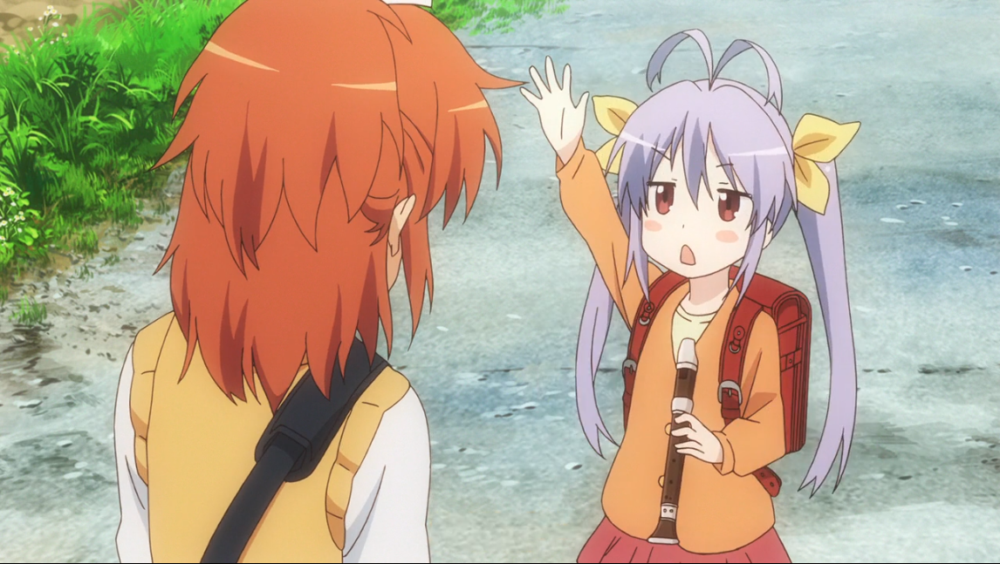
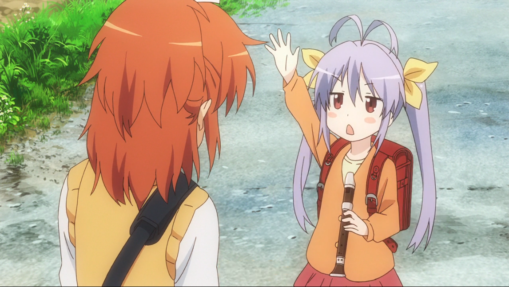
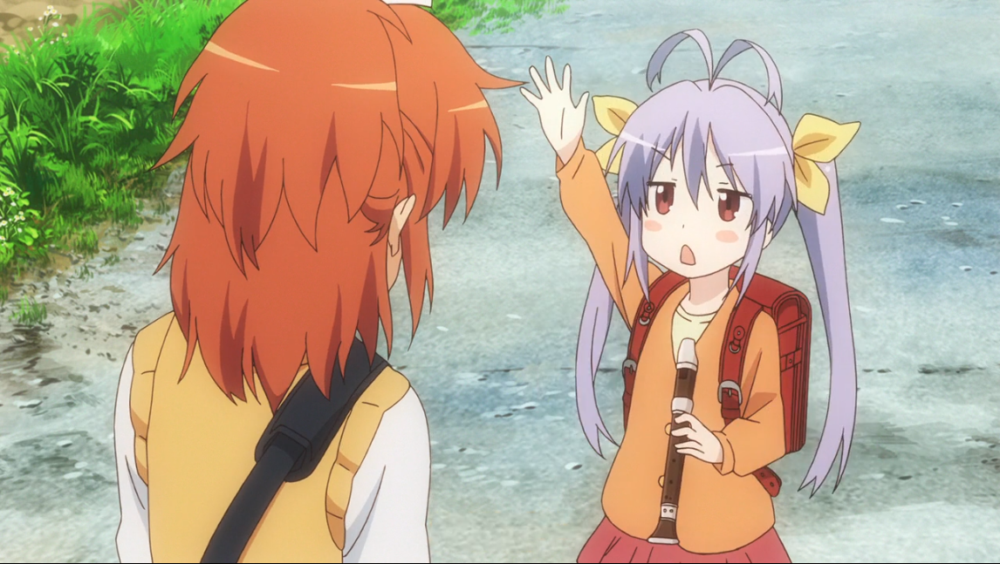

劇情簡介
《悠悠哉哉少女日和》是一部漫畫改編，治癒向的日常喜劇動漫，作品舞台是一個掛著「注意牛隻穿越」的看板，公車不等上5個小時不會來的鄉下。
主角一条螢因父親工作調職的關係從東京遷居此地，進入「旭丘分校」就讀，故事即描寫螢與同學家越谷及宮內姐妹度過的日常。
 

劇情簡介
《悠悠哉哉少女日和》是一部漫畫改編，治癒向的日常喜劇動漫，作品舞台是一個掛著「注意牛隻穿越」的看板，公車不等上5個小時不會來的鄉下。
主角一条螢因父親工作調職的關係從東京遷居此地，進入「旭丘分校」就讀，故事即描寫螢與同學家越谷及宮內姐妹度過的日常。

©洪士鴻 All Right Reserved